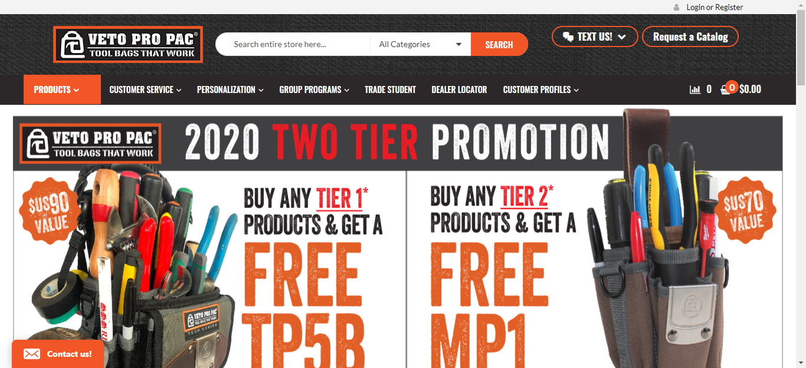

<div id="ajax-page" class="ajax-page-content">
    <div class="ajax-page-wrapper">
        <div class="ajax-page-nav">
            <div class="nav-item ajax-page-prev-next">
                <a class="ajax-page-load" href="portfolio-5.html"><i class="zmdi zmdi-chevron-left"></i></a>
                <a class="ajax-page-load" href="portfolio-7.html"><i class="zmdi zmdi-chevron-right"></i></a>
            </div>
            <div class="nav-item ajax-page-close-button">
                <a id="ajax-page-close-button" href="#"><i class="zmdi zmdi-close"></i></a>
            </div>
        </div>

        <div class="ajax-page-title">
            <h1>Veto Pro Pac</h1>
        </div>

        <div class="row">
            <div class="col-sm-7 col-md-7 portfolio-block">

              <div class="portfolio-page-image">
                
            </div>
        </div>

        <div class="col-sm-5 col-md-5 portfolio-block">
            <!-- Project Description -->
            <div class="block-title">
                <h3>Description</h3>
            </div>
            <ul class="project-general-info">
                <li><p><i class="fa fa-user"></i> Team Size: 7</p></li>
                <li><p><i class="fa fa-globe"></i> <a href="https://vetopropac.com" target="_blank">www.vetopropac.com</a></p></li>
            </ul>

            <p class="text-justify">Veto Pro Pac is a ecommerce website build on wordpress. VetoProPac tool bags are designed to keep your tools vertically organized, offer easy access, & easy carrying of tool bags, tool pouch, tool backpacks, etc.</p>
            <!-- /Project Description -->

            <!-- Technology -->
            <div class="tags-block">
                <div class="block-title">
                    <h3>Technology</h3>
                </div>
                <ul class="tags">
                    <li><a>HTML5</a></li>
                    <li><a>CSS3</a></li>
                    <li><a>jQuery</a></li>
                    <li><a>Bootstrap</a></li>
                    <li><a>AJAX</a></li>
                    <li><a>PHP</a></li>
                    <li><a>Wordpress</a></li>
                    <li><a>MySQL</a></li>
                </ul>
            </div>
            <!-- /Technology -->

        </div>
    </div>
</div>
</div>
